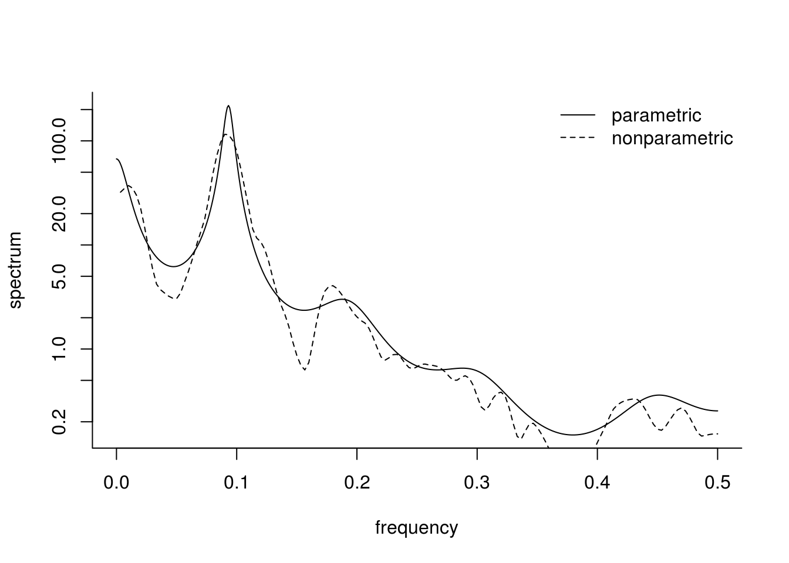
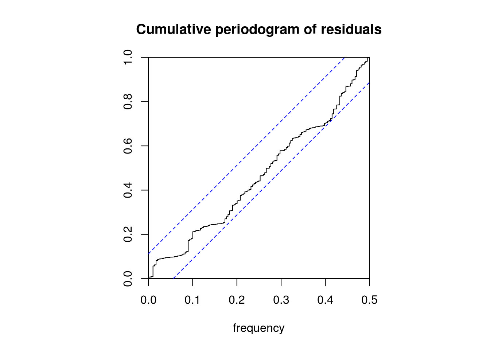
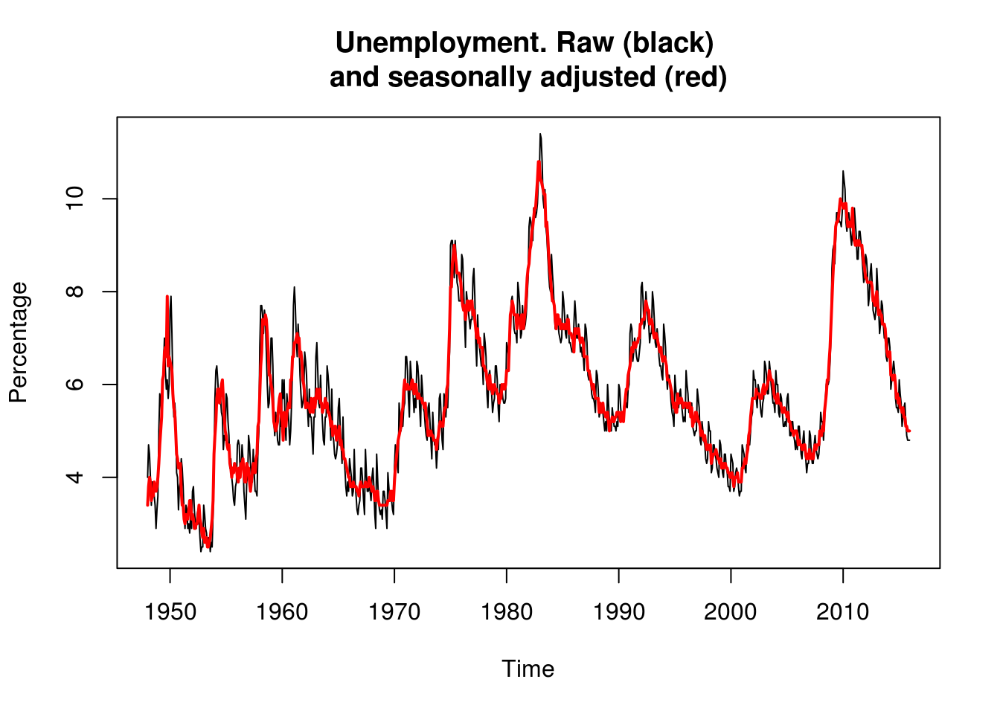
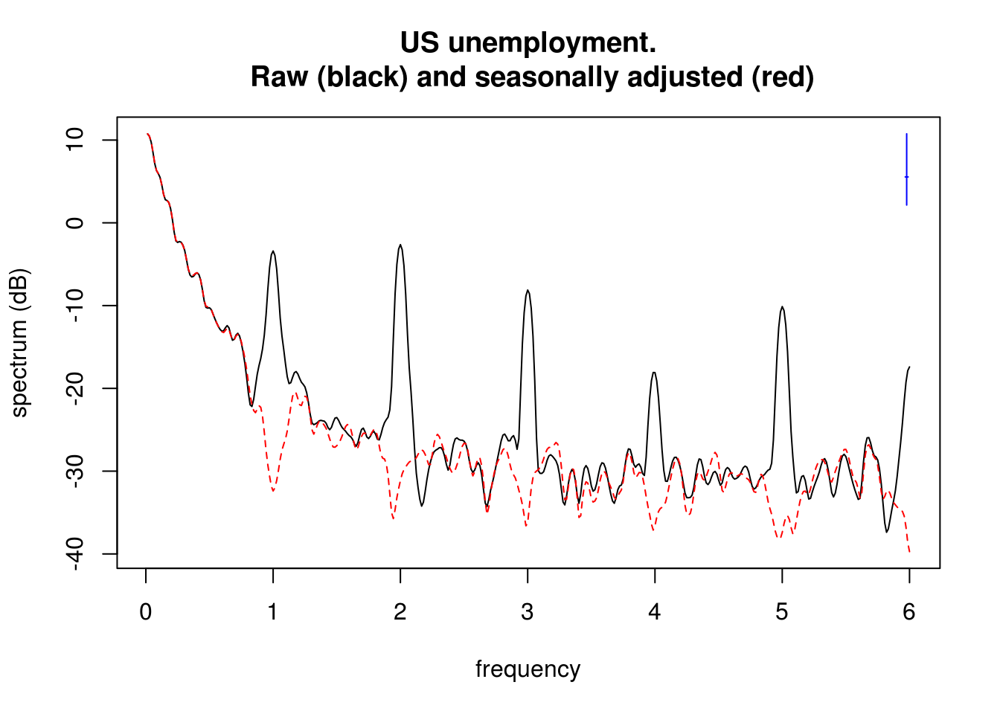
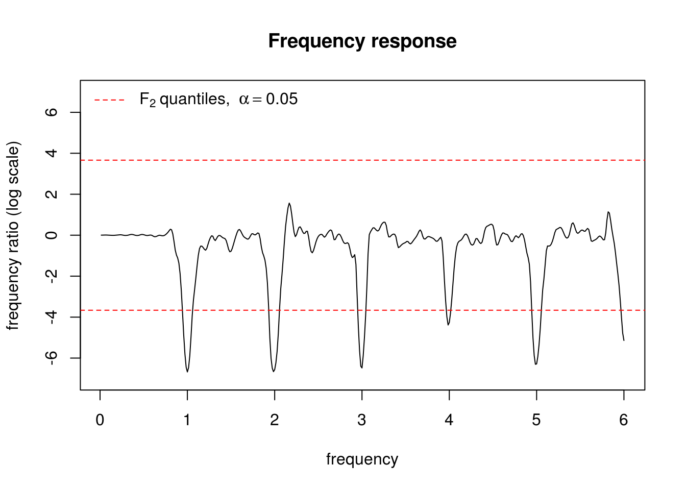
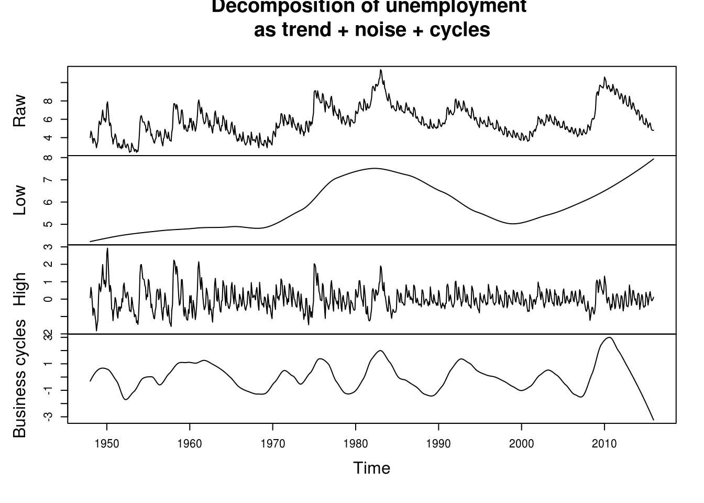

4.3 Spectral estimation in R
The workhorse for spectral estimation is the function spectrum, which calls spec.pgram in the background for nonparametric spectral estimation. It uses by default the modified Daniell’s filters, whose argument are fixed via spans. The function uses the percentage cosine taper, with taper=0.1 as default. The option fast is used for zero-padding. The function TSA::spec is equivalent to spectrum.
One can also resort to parametric estimation via the spec.ar. The package astsa has a function astsa::arma.spec to display the spectrum of a given ARMA model (see also TSA::ARMAspec).
Here is a simple example using the function spectrum. The last line performs the graphical test for white noise using the cumulative periodogram (with default tapering of 0.1). The confidence bands are derived using the asymptotic approximate \(\chi^2\) distribution. The height of the line to the right of the plot shows the width of a 95% confidence interval for the underlying function, and the width of its centre mark indicates the bandwidth parameter.
sun_ar = spec.ar(sunspot, plot = FALSE) # parametric estimation based on AR model
# The latter's order is estimated using the Yule-Walker equations, with
# order selected by AIC
sun_np = spectrum(sunspot, spans = c(5, 5), plot = FALSE) # nonparametric
plot(sun_ar$freq, sun_ar$spec, type = "l", log = "y", ylab = "spectrum", xlab = "frequency",
bty = "l")
lines(sun_np$freq, sun_np$spec, lty = 2)
legend("topright", c("parametric", "nonparametric"), lty = 1:2, bty = "n")
cpgram(resid(arima(sunspot, c(2, 0, 0))), main = "Cumulative periodogram of residuals")
4.3.1 Smoothing and seasonally adjusted values
The following is taken from Edward Ionides course and licensed under Creative Commons attribution-noncommercial license, http://creativecommons.org/licenses/by-nc/3.0/.
Suppose one is interested in long-term trend in unemployment in the US. The following series provide both raw and seasonally adjusted figures for monthly unemployment.
U1 <- read.csv(file = "https://raw.githubusercontent.com/ionides/531w16/master/notes08/unadjusted_unemployment.csv",
skip = 8, header = TRUE, sep = ",")
U2 <- read.csv(file = "https://raw.githubusercontent.com/ionides/531w16/master/notes08/adjusted_unemployment.csv",
skip = 8, header = TRUE, sep = ",")
u1 <- ts(c(unlist(t(U1[, 2:13]))), start = c(1948, 1), frequency = 12)
plot(u1, ylab = "Percentage")
u2 <- ts(c(unlist(t(U2[, 2:13]))), start = c(1948, 1), frequency = 12)
lines(c(time(u2)), c(u2), col = 2, lwd = 2)
title("Unemployment. Raw (black) \nand seasonally adjusted (red)")
We see seasonal variation, and perhaps we see business cycles on top of a slower trend. […] The seasonal variation looks like an additive effect, say an annual fluctation with amplitude around 1 percentage point.
We are interested here in comparing the spectrum of the two series, so we won’t differentiate the series. We can use the approximate Fisher \(F_{2,2}\) distribution to perform a two-sided test for the null hypothesis of equality of spectra.
perio <- spec.pgram(fast = TRUE, ts.union(u1, u2), spans = c(3, 5, 3), taper = 0.2,
plot = FALSE)
plot(perio, log = "dB", sub = "", main = "US unemployment.\n Raw (black) and seasonally adjusted (red)")
plot(perio$freq, log(perio$spec[, 2]/perio$spec[, 1]), type = "l", ylab = "frequency ratio (log scale)",
xlab = "frequency", main = "Frequency response", ylim = c(-7, 7))
abline(h = log(c(qf(0.025, 2, 2), qf(0.975, 2, 2))), lty = "dashed", col = "red")
legend("topleft", lty = 2, col = 2, legend = expression(F[2, 2] ~ "quantiles, " ~
alpha == 0.05), bty = "n")
What frequencies where removed by the seasonally adjusted series and what time period does these correspond to?
One could identify business cycles or focus and separate high frequency and low frequency by using low pass or high pass filters. This is basically smoothing. One could use loess, which uses local linear fit, to achieve this, but any other smoother discussed above could also achieve the objective. The argument span in loess is the bandwidth parameter (the larger, the more observations are taken into account).
# Low pass and high pass filter
u_low <- ts(loess(u1 ~ time(u1), span = 0.5)$fitted, start = 1948, frequency = 12)
u_hi <- ts(u1 - loess(u1 ~ time(u1), span = 0.1)$fitted, start = 1948, frequency = 12)
u_cycles <- u1 - u_hi - u_low
plot(ts.union(Raw = u1, Low = u_low, High = u_hi, `Business cycles` = u_cycles),
ylab = "main", main = "Decomposition of unemployment (trend + noise + cycles)")
4.3.2 Exercise 1: Southern oscillation index (SOI) and fish recruitement
The data soi from the package astsa contains 453 monthly measures of the SOI. The dataset rec contains fish recruitement statistics for the same period.
- Perform a spectral analysis using a parametric estimator based on an AR model.
- Plot the log-periodograms of both series on the decibel scale
- Identify the main frequencies of the series.
- Try out different tapers and different degrees. Note the impact of the latter.
- Smooth the series using a low-pass filter and extract the seasonal variation. Plot the periodogram and comment on the resulting estimate.